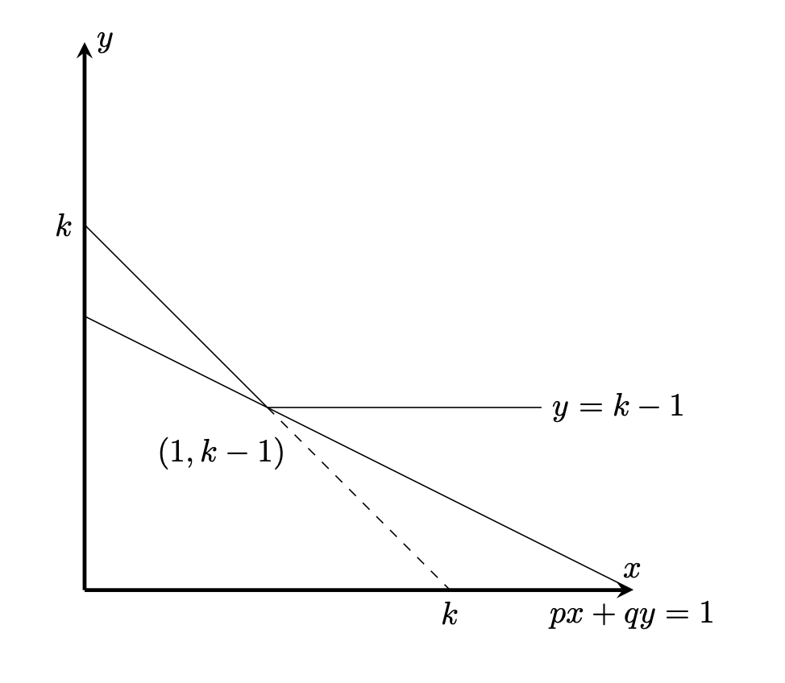

経済学で出る数学
ワークブックでじっくり攻める：応用問題
間接効用関数が必ずしも凸にならない効用関数
【問】 効用関数$u(x,y)=\min (x,1)+y$，価格$p,q$，予算$I=1$に対し，
次の問題を考える．
\begin{align*}
v(p,q,I)=\max_{x,y}& \ u(x,y)\\[2ex]
s.t.& px+qy=1
\end{align*}
間接効用関数$v(p,q,I)$を求めなさい．
また$v(p,q,I)$は$(p,q)$について凸関数でないことを示しなさい．
【解答】
$x<1 $では，$u(x,y)=x+y$, $x\geq 1$では$u(x,y)=1+y$となる．
従って等高線$u(x,y)=k$は$x\leq 1$では$x+y=k$，$x\geq 1$では$1+y=k$となる．
$px+qy=1$と$x+y=k$の傾きを比較すると，$\dfrac{-p}{q}>-1$，すなわち$q>p$のとき，
効用関数の等高線と予算線は$(1,k-1)$で接することになり，ここで効用最大となる．
従って，予算制約から
\[
p\cdot 1 +q(k-1)=1
\]
なので
\[
k=1+\dfrac{1-p}{q}
\]
\[
u(1,k-1)=1+(1+\dfrac{1-p}{q})-1=1+\dfrac{1-p}{q})
\]
なので
\[
v(p,q,I)=1+\dfrac{1-p}{q}
\]
となる．

$(p,q)=(\dfrac{1}{4},1), (p^{\prime}, q^{\prime})=(\dfrac{1}{2}, \dfrac{3}{4})$とする，
\[
\dfrac{1}{2}(p,q)+\dfrac{1}{2}(p^{\prime},q^{\prime})=(\dfrac{3}{8}, \dfrac{7}{8})
\]
だが，
\begin{align*}
v(\dfrac{1}{4},1,1)=\dfrac{7}{4}\\
v(\dfrac{1}{2}, \dfrac{3}{4},1)=\dfrac{5}{3}\\
v(\dfrac{3}{8}, \dfrac{7}{8},1)=\dfrac{12}{7}\\
\end{align*}
となり，
\[
\dfrac{1}{2}\cdot\dfrac{7}{4}+\dfrac{1}{2}\cdot\dfrac{5}{3}=\dfrac{41}{24}=\dfrac{287}{168} < \dfrac{12}{7}=\dfrac{288}{168}
\]
なので凸性は崩れる．
【解答終】
【メモ】
この問題はChatGPT5.2によって生成した（2026.1.28）プロンプトは「「価格について準凸だが凸でない間接効用」の具体例を教えてください」
【メモ終】
ふろく（２）応用問題 一覧へ